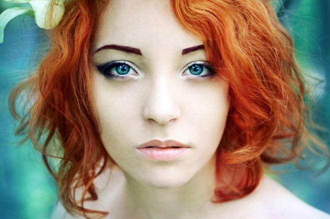

Dominique Gabrielle WeasleyAbout:1. Dominique Gabrielle Weasley was born to William Arthur Weasley and Fluer Isabelle Delacour in May 11 2007. 2. Her siblings are Victoire Isabelle Weasley, Louis Arthur Weasley. 3. She was sorted into Slytherin house when he first went to Hogwarts School of Witchcraft and Wizardry in 2018, at the age of 11. 4. Her godparents Pervival Ignatius Weasley and Audery Abigil Anderson. 5. She is a half blood witch. 6. She wasn't appointed as Prefect or Head Girl but she was appointed as Quidditch Captain for Slytherin her 7th year. Characteristics: 1. Cunning 2. Funny 3. Sneaky Possesions: 1. Transylvanian Barb(broomstick) 2. Her aunt Ginny's first necklace that was given by Arthur weasley 3. A 12¼", Black Thorn, Dragon Heatstring Wand Other Details: Eye Colour - Blue Hair Colour - Red Height - 137cm (1st year) Height - 167cm (7th year) Species - Human Gender - Female Patronus - Fox Boggart - Getting caught red handed for pranking Quidditch Position - Beater for Slytherin (2nd year to 6th year), Seeker for Slytherin (7th year) Favourite Colour - Black Nickname - Dom Speciality - Quidditch Later Life: Married To: Gargy Crabbe Goyle Kids - Gabline Dominique Goyle (August 27, 2031), Kristoff Gargy Goyle (September 1, 2034) Professions - Beater for HolyHead Harpies, House Wife (Later) |
 |